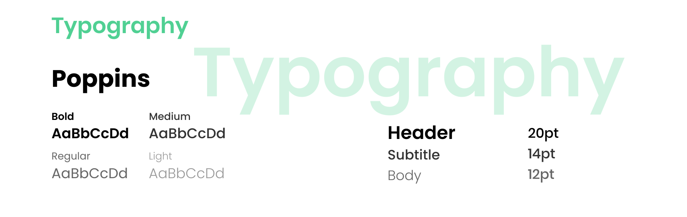

UX/UI Case Study : create a new app
App Design: Sawyer
Visit onlineSawyer is an app designed by students that prefer to not communicate with other humans but yet want reliable services.
The app is a platform for homeowners and contractors to easily connect with each other for services. Living in the age of technology, our team found that it can be a hassle to find reliable and quality services. Sawyer is an application that was developed to give customers a platform to find cerified contractors in their local communities. On the other hand, the app also serves contractors a platform to manage and market their services.
Project
SFU SIAT 334 - Interface Design
Project Members
Adrian He, Emily Li, Kevin Yu, Khanh Dinh & Ryan Heeps
Timeline
8 weeks // Summer 2020
Tools
Figma, Protopie
Roles
Branding, UX / UI
Brainstorming & Low-Fidelity Website Design
Inspired by the newly release Animal Crossing game (at the time), my team wanted to create a platform for share economy model (a community based peer-to-peer platform). We presented 3 different ideas in our STAGE 1 Presentations (view PDF slides) In the end, we chose to create a platform to connect homeowners and local contractors.
We started our design with a website in mind. We wanted a cleaner and easier version like Craigslist but focused on professional cerified contractors. However, after feedbacks we noticed that it will be most useful in form of a phone application for users. Similarly to platforms like Taskrabbit, the app is to make an easy, strees-free way to connect clients and contractors.

Intial Website Lo-fi Design & User flow
It was just not practical to use a website design for our audience. We are targetting new/ young homeowners that want to connect to licensed professionals. Rather, we realise a mobile app would be more suitable. It provides convience, and communincation between homeowners and providers a centralized platform for everything.
Personas
Here are some quick persona (homeowner & contractor) that we wanted to target. If you are interested in our full STAGE 2 Presentation of this project, please let me know and I will be happy to share with you!!
Solidify Userflow
After consulting the changes to move to mobile app design, we wanted to solidify the user flow to help us focus on what we should work on
High-Fidelity UI Designs
Learning the hard way, as a beginner UX designer I wanted to really go straight to the high fidelty work but I had to learn the hard way that it is not efficent and cause delays in future iterations. For this project, I had done some simple sketches on paper but had forgotten to scan the work to create a digital copy.
The below photo is a screenshot of the Figma canvas section where I played around with the UI design. I was focused on visuals and colour and the branding of our company, Sawyer
Final Work Samples (Login/Signup Pages)
After some reworking, here are some finalized work on the login/signup pages
Company Styleguide

- 

Reflection & Company Website (showcase)
Throughout the process of creating this app and business, it was a eye-opening experience. I learned that there were a lot of elements that needs to be considered when creating a good user experience. There were so much more the experience of using an app to accomplish specific tasks. In our case, Sawyer was used to contact contractors, schedule bookings and conduct payment. The biggest challenge was thinking about the interface on both ends of platform: the contractors side and client side. In the end, we could only focus on the client side of the design and neglected the contractor side. Visit Website